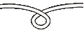
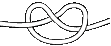

Conceptos Básicos
Los nudos son la herramienta básica para tu vida al aire libre, pues gracias a ellos podrás solventar y adaptarte a los retos que se te imponen.
Como Scout debes saber hacer “buenos nudos”. Hacer un nudo parece cosa sencilla y, sin embargo, se puede hacer bien o mal.
Un nudo bien hecho es capaz de resistir cualquier esfuerzo y sin embargo, puede deshacerse con facilidad.
Un nudo mal hecho es aquel que, cuando tiene que resistir una fuerza, se tira de él y se deshace; y cuando se trata de deshacerlo, se liga tan fuertemente que no hay manera de desbaratarlo
(Baden-Powell)
Partes de un Nudo
Puedes comprobar fácilmente, que casi todos los nudos, incluso los más complicados, están formados a partir de unos elementos básicos debidamente combinados entre sí, y de los que cabe citar los siguientes:
El seno, consiste en el arco o curvatura en forma de "U", de una cuerda o sedal.
 La media vuelta o Coca, es un anillo en la cuerda, formando dando un giro al la misma de modo que los dos chicotes o extremos de la cuerda, se superpongan en el punto de contacto.
La vuelta o Gaza, es la forma de amarrar un cabo aun objeto, sin formar un nudo propiamente dicho. Es muy parecido a la “Coca”; pero ambos extremos van el mismo sentido.
 Medio nudo, se forma haciendo pasar uno de los chicotes o extremos de la cuerda, por el interior de la vuelta.
Otros términos que tienen que ver con los nudos y cuerdas son:
Amarra cuerda con que se inmoviliza un bote o un barco a un punto firme.Aparejo sistemas de cuerdas y poleas.
Azocar apretar bien un nudo.
Balso lazo o con dos o tres vueltas o bucles.
Cabo cualquier cuerda o sedal usado para hacer un nudo.
Cáncamo anillo de metal donde fijamos una cuerda.
Chicote extremo de cualquier cuerda, sedal o cable.
Driza cuerda utilizada para izar las banderas, estandartes y velas.
Empalmar unir dos cuerdas.
Firme resto de la cuerda en relación a uno de sus extremos o chicotes.
Izar hacer subir una cosa tirando de ella por medio de una cuerda.
Mena grueso o calibre de una cuerda, sedal o cable.
Morder aguantar una cuerda bien apretada, para completar un nudo.
Zafar soltase un nudo de donde estaba sujeto.